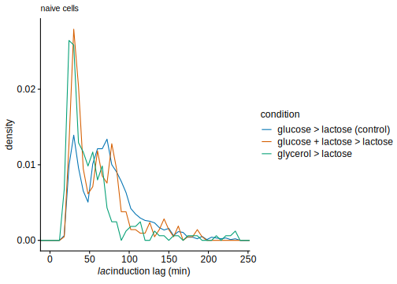

Our memory experiments revealed that the threshold of Lac proteins required to be readily sensitive to lactose as an inducer is on the order of 1 molecule. Accordingly, we predict that the fraction of short and long lags will change if we perturb the expression of the lac operon in its repressed state.
First, we perturb the repressed lac operon expression by manipulating LacI activity: using minute amounts of artificial inducer (IPTG), we can titrate a given fraction of LacI, conversly, LacI can be mildly overexpressed from a low copy number plasmid.
In a series of preliminary experiments, we check how to titrate LacI with IPTG: xxx In the following, we add IPTG only before the switch.
(myplots[['cmp_iptg_inhib']] <-
mycells_switching %>% ungroup() %>%
filter(!date %in% discarded_dates) %>%
filter(!discard_arrested) %>%
filter(switch_idx==1) %>%
filter(str_detect(condition, '^switch_[0-9]+h$') |
str_detect(condition, 'withIPTG5uM') | str_detect(condition, 'lacIPTG5uM') |
str_detect(condition, 'preIPTG5uM') ) %>%
mutate(condition=fct_relabel(condition, function(.x) ifelse(str_detect(.x, '^switch_[0-9]+h$'), 'lactose', .x)),
laci=factor(ifelse(condition=='lactose', 'control', 'lower')) %>% fct_relevel('lower', 'control') ) %>%
mutate(lag=lag_200,
lag=ifelse(!is.infinite(lag), lag, max(lag[is.finite(lag)])+60),
lag=ifelse(is.na(lag), -200, lag)) %>%
ggplot(aes(x=condition, y=lag/60)) +
geom_violin(aes(group=date, col=laci, fill=laci), adjust=0.7,
alpha=.4, position='identity') +
geom_hline(yintercept=50, lty='dashed') +
# ylim(0, 240) +
scale_x_discrete(breaks=c('lactose', 'switch_withIPTG5uM', 'switch_lacIPTG5uM', 'switch_preIPTG5uM'),
labels=c('glucose\n> lactose', 'glucose+IPTG\n> lactose+IPTG',
'glucose\n> lactose+IPTG', 'glucose+IPTG\n> lactose') )+
expand_limits(y=0) +
labs(y=lac_lags_label, col='LacI activity', fill='LacI activity') +
theme_cowplot_legend_inset() +
theme(#axis.text.x=element_text(angle=45, hjust=1.25, vjust=1.1),
axis.text.x=element_text(size=rel(1), colour='black'),
axis.title.x=element_blank(),
legend.position='top') +
NULL
) +
labs(subtitle='with [IPTG] = 5µM')According to our prediction, no short lags are observed with reduced basal expression and the fraction of long lags increases dramatically when basal expression is increased with 5µM IPTG. Supplementing IPTG can also compensate the effect of LacI overexpression.
(myplots[['basal_perturb_pre_violin']] <- function(.yannot=-10, .annot_size=3)
mycells_switching %>% ungroup() %>%
filter(!date %in% discarded_dates) %>%
filter(!discard_arrested) %>%
filter(switch_idx==1) %>%
filter(str_detect(condition, '^switch_[0-9]+h$') |
str_detect(condition, 'preIPTG') | str_detect(condition, 'lacIoe$')) %>%
mutate(condition=fct_relabel(condition, function(.x) ifelse(str_detect(.x, '^switch_[0-9]+h$'), 'control', .x)),
laci=fct_recode(condition, 'lower'='switch_preIPTG5uM',
'lower'='switch_lacIoe_preIPTG10uM',
'higher'='switch_lacIoe') %>%
fct_relevel('lower', 'control'),
condition=fct_relevel(condition, 'switch_lacIoe', "control",
'switch_lacIoe_preIPTG10uM', 'switch_preIPTG5uM') %>%
fct_recode('+ 5µM IPTG'='switch_preIPTG5uM',
'+ LacI plasmid'='switch_lacIoe',
'+ LacI plasmid\n+ 10µM IPTG'='switch_lacIoe_preIPTG10uM') ) %>%
mutate(lag=lag_200,
lag=ifelse(lag>240*60, Inf, lag)
) %>%
(function(.df)
ggplot(.df, aes(x=condition, y=lag/60)) +
geom_hline(yintercept=50, lty='dashed') +
geom_violin(aes(group=date, fill=laci, col=laci), adjust=.7, width=1.1, alpha=.4, position='identity') +
geom_text(aes(y=.yannot, label=annot), vjust=0.5, size=.annot_size, lineheight=1,
data=.df %>% group_by(condition, laci) %>%
summarise(n=n(), type='short', prop=sum(lag/60<50, na.rm=TRUE)/sum(!is.na(lag)),
annot=sprintf("%.0f%%\nn=%d", prop*100, n)) ) +
coord_cartesian(ylim=c(-35, 240), expand=FALSE) +
labs(y=lac_lags_label, col='LacI activity', fill='LacI activity') +
guides(fill=guide_legend(override.aes=list(alpha=1), reverse=TRUE), col=guide_legend(reverse=TRUE)) +
theme_cowplot_legend_inset(0.8) +
theme(axis.title.x=element_blank(),
axis.text.x=element_text(size=rel(1), colour='black',
angle=45, hjust=1, vjust=0.5, margin=margin(t=-28, b=34)),
legend.margin=margin(),
# legend.title=element_text(size=rel(0.7), face='bold'),
# legend.text=element_text(size=rel(0.7)),
legend.position='top') +
NULL
) )()(myplots[['basal_perturb_pre_frac_short']] <-
mycells_switching %>% ungroup() %>%
filter(!date %in% discarded_dates) %>%
filter(!discard_arrested) %>%
filter(switch_idx==1) %>%
filter(str_detect(condition, '^switch_[0-9]+h$') |
str_detect(condition, 'preIPTG') | str_detect(condition, 'lacIoe$')) %>%
mutate(condition=fct_relabel(condition, function(.x) ifelse(str_detect(.x, '^switch_[0-9]+h$'), 'control', .x)),
laci=fct_recode(condition, 'lower'='switch_preIPTG5uM',
'lower'='switch_lacIoe_preIPTG10uM',
'higher'='switch_lacIoe') %>%
fct_relevel('lower', 'control'),
condition=fct_relevel(condition, 'switch_lacIoe', "control",
'switch_lacIoe_preIPTG10uM', 'switch_preIPTG5uM') %>%
fct_recode('with 5µM IPTG'='switch_preIPTG5uM',
'with LacI plasmid'='switch_lacIoe',
'with LacI plasmid\n+ 10µM IPTG'='switch_lacIoe_preIPTG10uM') ) %>%
mutate(lag=lag_200,
lag=ifelse(lag>240*60, Inf, lag)
) %>%
group_by(condition, laci) %>%
summarise(n=n(), type='short', prop=sum(lag/60<50, na.rm=TRUE)/sum(!is.na(lag)),
prop_se=sqrt(prop*(1-prop)/n)) %>%
ggplot(aes(x=condition, y=prop)) +
geom_bar(aes(y=1), fill='gray95', stat='identity') +
geom_bar(aes(fill=laci), stat='identity') +
# geom_rect(aes(xmin=as.numeric(condition)-.45, xmax=as.numeric(condition)+.45,
# ymin=prop-prop_se, ymax=prop+prop_se), data=.df) +
geom_errorbar(aes(ymin=prop-prop_se, ymax=prop+prop_se), width=.25) +
geom_text(aes(y=1, label=sprintf('n=%d', n)), vjust=1.3) +
labs(y='prop. of short lags') +
# expression(paste("type of ", italic("lac"), " induction lag"))
theme_cowplot_legend_inset(0.8) +
theme(axis.title.x=element_blank(),
axis.text.x=element_text(size=rel(1), colour='black',
angle=45, hjust=0.8, vjust=0.9),
legend.margin=margin(),
legend.position='top') +
NULL
)mycells_switching %>% ungroup() %>%
filter(!date %in% discarded_dates) %>%
filter(!discard_arrested) %>%
filter(switch_idx==1) %>%
filter(str_detect(condition, '^switch_[0-9]+h$') |
str_detect(condition, 'preIPTG') | str_detect(condition, 'lacIoe$')) %>%
mutate(condition=fct_relabel(condition, function(.x) ifelse(str_detect(.x, '^switch_[0-9]+h$'), 'control', .x)),
laci=fct_recode(condition, 'lower'='switch_preIPTG5uM',
'lower'='switch_lacIoe_preIPTG10uM',
'higher'='switch_lacIoe') %>%
fct_relevel('lower', 'control'),
condition=fct_relevel(condition, 'switch_lacIoe', "control",
'switch_lacIoe_preIPTG10uM',
'switch_preIPTG5uM') %>%
fct_recode('with 5µM IPTG'='switch_preIPTG5uM',
'with LacI plasmid'='switch_lacIoe',
'with LacI plasmid\n+ 10µM IPTG'='switch_lacIoe_preIPTG10uM') ) %>%
mutate(
lag_type=lag_200,
lag_type=as.character(lag_type), lag_type=ifelse(is.na(lag_type), 'NA', lag_type),
lag_type=ifelse(is.finite(as.numeric(lag_type)) & as.numeric(lag_type)<50*60, 'short lags', lag_type),
lag_type=ifelse(is.finite(as.numeric(lag_type)) & as.numeric(lag_type)>=50*60, 'long lags', lag_type) ) %>%
group_by(condition, lag_type) %>%
summarise(n=n(), m=mean(lag_200/60), sd=sd(lag_200/60)) %>%
group_by(condition) %>% mutate(p=n/sum(n), p_se=sqrt(p*(1-p)/n)) %>%
knitr::kable(digits=3) %>%
kableExtra::kable_styling() %>%
identity()| condition | lag_type | n | m | sd | p | p_se |
|---|---|---|---|---|---|---|
| with LacI plasmid | Inf | 3 | Inf | NaN | 0.009 | 0.054 |
| with LacI plasmid | long lags | 281 | 127.463 | 67.399 | 0.841 | 0.022 |
| with LacI plasmid | NA | 31 | NA | NA | 0.093 | 0.052 |
| with LacI plasmid | short lags | 19 | 39.000 | 7.810 | 0.057 | 0.053 |
| control | Inf | 52 | Inf | NaN | 0.032 | 0.024 |
| control | long lags | 1061 | 89.601 | 33.097 | 0.650 | 0.015 |
| control | NA | 106 | NA | NA | 0.065 | 0.024 |
| control | short lags | 414 | 34.261 | 7.056 | 0.254 | 0.021 |
| with LacI plasmid + 10µM IPTG | long lags | 78 | 77.154 | 21.339 | 0.448 | 0.056 |
| with LacI plasmid + 10µM IPTG | NA | 14 | NA | NA | 0.080 | 0.073 |
| with LacI plasmid + 10µM IPTG | short lags | 82 | 36.951 | 5.923 | 0.471 | 0.055 |
| with 5µM IPTG | Inf | 2 | Inf | NaN | 0.006 | 0.053 |
| with 5µM IPTG | long lags | 112 | 67.554 | 13.944 | 0.322 | 0.044 |
| with 5µM IPTG | NA | 20 | NA | NA | 0.057 | 0.052 |
| with 5µM IPTG | short lags | 214 | 33.393 | 7.309 | 0.615 | 0.033 |
A similar picture is obtained when IPTG is added before and after the switch:
(myplots[['basal_perturb_with']] <-
mycells_switching %>% ungroup() %>%
filter(!date %in% discarded_dates) %>%
filter(!discard_arrested) %>%
filter(switch_idx==1) %>%
filter(str_detect(condition, '^switch_[0-9]+h$') |
str_detect(condition, 'withIPTG') | str_detect(condition, 'lacIoe$')) %>%
mutate(condition=fct_relabel(condition, function(.x) ifelse(str_detect(.x, '^switch_[0-9]+h$'), 'control', .x)),
laci=fct_recode(condition, 'lower'='switch_withIPTG5uM', 'lower'='switch_withIPTG1uM',
'higher'='switch_lacIoe', 'higher'='switch_lacIoe_withIPTG10uM') %>%
fct_relevel('lower', 'control'),
condition=fct_relevel(condition, 'switch_lacIoe', 'switch_lacIoe_withIPTG10uM',
"control", 'switch_withIPTG1uM', 'switch_withIPTG5uM') %>%
fct_recode('with 5µM IPTG'='switch_withIPTG5uM', 'with 1µM IPTG'='switch_withIPTG1uM',
'with LacI plasmid'='switch_lacIoe',
'with LacI plasmid\n+ 10µM IPTG'='switch_lacIoe_withIPTG10uM') ) %>%
mutate(lag=lag_200,
lag=ifelse(lag>240*60, Inf, lag)
# lag=ifelse(!is.infinite(lag), lag, max(lag[is.finite(lag)])+60),
# lag=ifelse(is.na(lag), -200, lag)
) %>%
(function(.df)
ggplot(.df, aes(x=condition, y=lag/60)) +
geom_hline(yintercept=50, lty='dashed') +
geom_violin(aes(group=date, fill=laci, col=laci), adjust=0.7, width=1.45, alpha=.4, position='identity') +
geom_text(aes(y=0, label=annot), vjust=0.5,
data=.df %>% group_by(condition, laci) %>%
summarise(n=n(), type='short', prop=sum(lag/60<50, na.rm=TRUE)/sum(!is.na(lag)),
annot=sprintf("p=%.02f\nn=%d", prop, n)) ) +
expand_limits(y=-10) +
labs(y=lac_lags_label, col='LacI activity', fill='LacI activity') +
guides(fill=guide_legend(override.aes=list(alpha=1))) +
theme_cowplot_legend_inset(0.8) +
theme(axis.title.x=element_blank(),
axis.text.x=element_text(size=rel(1), colour='black',
angle=45, hjust=0.8, vjust=0.9),
legend.margin=margin(),
legend.position='top') +
NULL
))Importantly, we perturb the basal expression such that the lac promoter is not induced before the switch. xxx add induced levels
(myplots[['basal_perturb_gfp']] <-
mycells_switching %>% ungroup() %>%
filter(!date %in% discarded_dates) %>%
filter(!discard_arrested) %>%
filter(switch_idx==1) %>%
filter(str_detect(condition, '^switch_[0-9]+h$') | str_detect(condition, 'preIPTG') ) %>%
mutate(condition=fct_relabel(condition, function(.x) ifelse(str_detect(.x, '^switch_[0-9]+h$'), 'control', .x)),
laci=fct_recode(condition, 'lower'='switch_preIPTG5uM', 'higher'='switch_lacIoe_preIPTG10uM') %>%
fct_relevel('lower', 'control'),
condition=fct_relevel(condition, 'switch_lacIoe', 'switch_lacIoe_preIPTG10uM',
"control", 'switch_preIPTG5uM') %>%
fct_recode('with 5µM IPTG'='switch_preIPTG5uM', 'no IPTG'='control',
'with LacI plasmid\n+ 10µM IPTG'='switch_lacIoe_preIPTG10uM') ) %>%
mutate(lag=lag_200,
lag=ifelse(!is.infinite(lag), lag, max(lag[is.finite(lag)])+60),
lag=ifelse(is.na(lag), -200, lag)) %>%
ggplot(aes(condition, gfp_ini)) +
geom_violin(aes(group=date, col=laci, fill=laci), adjust=0.7, alpha=.4, position='identity') +
labs(x='', y='LacZ-GFP at the switch (molecules / cell)', col='LacI activity', fill='LacI activity') +
guides(fill=guide_legend(override.aes=list(alpha=1))) +
theme(axis.title.x=element_blank(),
axis.text.x=element_text(size=rel(1), colour='black',
angle=45, hjust=0.8, vjust=0.9),
legend.margin=margin(),
legend.title=element_text(size=rel(0.7), face='bold'),
legend.text=element_text(size=rel(0.7)),
legend.position='top') +
NULL
)Another prediction of our interpretation is that the proportion of short lag should increase when cells are switched from conditions where the basal expresion of the lac operon is higher than in M9 + 0.2% glucose:
(myplots[['lags_hist_glyc_glcLac']] <-
mycells_switching %>% ungroup %>%
filter(! date %in% discarded_dates) %>%
filter(!discard_arrested | condition=='switch_gly_lac') %>%
filter(switch_idx==1) %>%
filter(str_detect(condition, '^switch_[0-9]+h$') | condition %in% c('switch_glcLac_lac', 'switch_gly_lac') ) %>%
mutate(lag=lag_200,
lag=ifelse(is.na(lag), -1000, lag) ) %>%
mutate(condition=fct_relabel(condition, function(.x) ifelse(str_detect(.x, '^switch_[0-9]+h$'), 'control', .x)),
condition=fct_recode(factor(condition), 'glucose + lactose > lactose'='switch_glcLac_lac',
'glycerol > lactose'='switch_gly_lac',
'glucose > lactose (control)'='control') ) %>%
ggplot(aes(lag/60, ..density..)) +
geom_freqpoly(aes(col=condition), binwidth=6) +
coord_cartesian(xlim=c(0, 240)) +
labs(x=lac_lags_label) +
NULL
) +
labs(subtitle='naive cells')
# mycells_switching %>% ungroup %>%
# filter(! date %in% discarded_dates) %>%
# filter(!discard_arrested | condition=='switch_gly_lac') %>%
# filter(switch_idx==1) %>%
# filter(str_detect(condition, '^switch_[0-9]+h$') | condition %in% c('switch_glcLac_lac', 'switch_gly_lac') ) %>%
# mutate(lag=lag_200) %>%
# mutate(condition=fct_relabel(condition, function(.x) ifelse(str_detect(.x, '^switch_[0-9]+h$'), 'control', .x)),
# condition=fct_recode(factor(condition), 'glucose + lactose > lactose'='switch_glcLac_lac',
# 'glycerol > lactose'='switch_gly_lac',
# 'glucose > lactose (control)'='control') ) %>%
# group_by(condition) %>%
# summarise(n=n(), p_short=sum(lag/60<50, na.rm=TRUE)/sum(!is.na(lag)), p_short_se=sqrt(p_short*(1-p_short)/n)) %>%
# ggplot(aes(x=condition, y=p_short)) +
# geom_bar(stat='identity') +
# geom_errorbar(aes(ymin=p_short-p_short_se, ymax=p_short+p_short_se), width=.4) +
# geom_text(aes(y=0.65, label=sprintf('n=%d', n)), vjust=1.1) +
# # coord_cartesian(xlim=c(0, 240)) +
# labs(y='fraction of short lags') +
# theme(axis.text.x=element_text(size=rel(1), colour='black'), axis.title.x=element_blank()) +
# NULL
(myplots[['glyc_mix_violin']] <-
mycells_switching %>% ungroup %>%
filter(! date %in% discarded_dates) %>%
filter(!discard_arrested | condition=='switch_gly_lac') %>%
filter(switch_idx==1) %>%
filter(str_detect(condition, '^switch_[0-9]+h$') | condition %in% c('switch_glcLac_lac', 'switch_gly_lac') ) %>%
mutate(lag=lag_200) %>%
mutate(condition=fct_relabel(condition, function(.x) ifelse(str_detect(.x, '^switch_[0-9]+h$'), 'control', .x)),
# condition=fct_recode(factor(condition), 'glucose + lactose > lactose'='switch_glcLac_lac',
# 'glycerol > lactose'='switch_gly_lac',
# 'glucose > lactose (control)'='control') ) %>%
# laci=ifelse(condition=='control', 'control', NA),
condition=fct_recode(factor(condition), 'gluc + lac \u2794 lac'='switch_glcLac_lac',
'glyc \u2794 lac'='switch_gly_lac',
'gluc \u2794 lac'='control',
) ) %>%
mutate(lag=lag_200,
lag=ifelse(lag>240*60, Inf, lag)
) %>%
(function(.df)
ggplot(.df, aes(x=condition, y=lag/60)) +
geom_hline(yintercept=50, lty='dashed') +
geom_violin(aes(group=date, fill=condition, col=condition), adjust=.7, width=1.1, alpha=.4, position='identity') +
geom_text(aes(y=-10, label=annot), vjust=0.5, size=3, lineheight=1,
data=.df %>% group_by(condition) %>%
summarise(n=n(), type='short', prop=sum(lag/60<50, na.rm=TRUE)/sum(!is.na(lag)),
annot=sprintf("%.0f%%\nn=%d", prop*100, n)) ) +
coord_cartesian(ylim=c(-35, 240), expand=FALSE) +
labs(y=lac_lags_label) +
scale_colour_manual(values=qual_cols[c(2,1,3)]) +
scale_fill_manual(values=qual_cols[c(2,1,3)]) +
# scale_colour_discrete(palette=function(.n) qual_cols[c(2,1,3)]) +
# scale_fill_discrete(limits=c('lower', 'control', 'higher')) +
# guides(fill=guide_legend(override.aes=list(alpha=1))) +
guides(col='none', fill='none') +
theme_cowplot_legend_inset(0.8) +
theme(axis.title.x=element_blank(),
axis.text.x=element_text(size=rel(1), colour='black',
angle=45, hjust=0.8, vjust=0.9),
legend.margin=margin(),
legend.position='top') +
NULL
))(myplots[['glyc_mix_frac_short']] <-
mycells_switching %>% ungroup %>%
filter(! date %in% discarded_dates) %>%
filter(!discard_arrested | condition=='switch_gly_lac') %>%
filter(switch_idx==1) %>%
filter(str_detect(condition, '^switch_[0-9]+h$') | condition %in% c('switch_glcLac_lac', 'switch_gly_lac') ) %>%
mutate(lag=lag_200) %>%
mutate(condition=fct_relabel(condition, function(.x) ifelse(str_detect(.x, '^switch_[0-9]+h$'), 'control', .x)),
# condition=fct_recode(factor(condition), 'glucose + lactose > lactose'='switch_glcLac_lac',
# 'glycerol > lactose'='switch_gly_lac',
# 'glucose > lactose (control)'='control') ) %>%
laci=ifelse(condition=='control', 'control', NA),
condition=fct_recode(factor(condition), 'gluc + lac \u2794 lac'='switch_glcLac_lac',
'glyc \u2794 lac'='switch_gly_lac',
'gluc \u2794 lac (control)'='control') ) %>%
group_by(condition, laci) %>%
summarise(n=n(), type='short', prop=sum(lag/60<50, na.rm=TRUE)/sum(!is.na(lag)),
prop_se=sqrt(prop*(1-prop)/n)) %>%
ggplot(aes(x=condition, y=prop)) +
geom_bar(aes(y=1), fill='gray95', stat='identity') +
geom_bar(aes(fill=laci), stat='identity') +
# geom_rect(aes(xmin=as.numeric(condition)-.45, xmax=as.numeric(condition)+.45,
# ymin=prop-prop_se, ymax=prop+prop_se), data=.df) +
geom_errorbar(aes(ymin=prop-prop_se, ymax=prop+prop_se), width=.25) +
geom_text(aes(y=1, label=sprintf('n=%d', n)), vjust=1.3) +
labs(y='prop. of short lags') +
# expression(paste("type of ", italic("lac"), " induction lag"))
scale_fill_discrete(limits=c('lower', 'control', 'higher')) +
theme_cowplot_legend_inset(0.8) +
theme(axis.title.x=element_blank(),
axis.text.x=element_text(size=rel(1), colour='black',
angle=45, hjust=0.8, vjust=0.9),
legend.margin=margin(),
legend.position='top') +
NULL
)NB: 2 independent replicates per condition